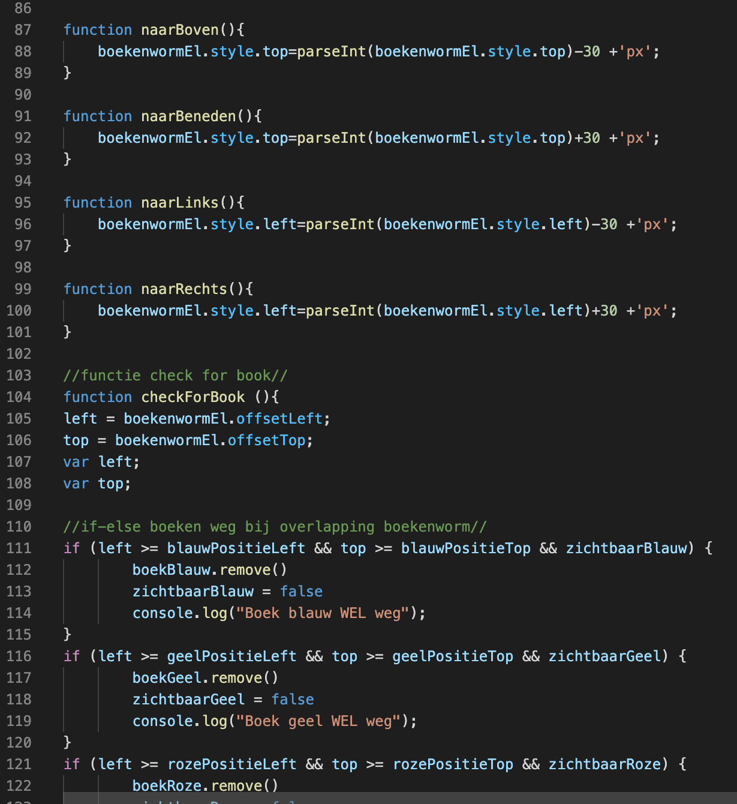
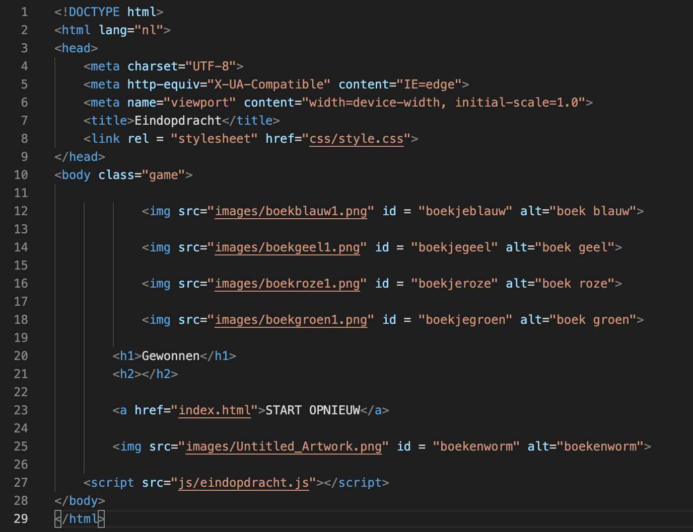

Projects
Introduction to Programming
Focus: HTML, CSS and Javascript
For the course "Introduction to Programming" I had to make an easy JavaScript game. This was my first time working with JavaScript. I wanted to make a game where a "Bookworm" had to collect books. When the bookworm found all four books, the game finished, and you could restart the game.
The process
Research
First, I had to figure out what I wanted to make. My hobby is reading, and I wanted to use this in my game. Then the "bookworm game" idea came up. I started sketching right away. A couple of cool ideas came to mind. After I finished sketching the application and making all the elements (background, bookworm image), I started working on all elements digitally. Next, I had to figure out which elements should be on the page (e.g., buttons, H1, H2). This helped me by making it clearer what had to be coded.
Struggles during the process
As I mentioned above, this was my first-time coding with JavaScript. It was very exciting to do. The basic elements with HTML and CSS went smoothly. My first struggle was making the bookworm move. This had to be done with the arrow keys. After a lot of research, I managed to make the bookworm move by using the arrow keys. It was quite difficult because sometimes I thought that I found the solution. The bookworm could move a couple of steps but then stopped. Eventually, the Bookworm could move throughout the whole screen without trouble.
My next struggle was how the browser knew when a book had to “disappear”. For this, I needed to know the location of the bookworm and the location of each book. With this information, I could indicate that if the bookworm was near the location of the book, the book should disappear. This was a difficult process and cost me a lot of time but in the end, I succeeded. I received a lot of help from different sources. I was kind of surprised that there were so many factors to be considered to make something like this.
How did I solve this
In the end, it all worked out. I got help from the teacher and student assistants. When it still didn't work, even my mother helped me find resources on the Internet. Thanks to all the help and ideas, I was able to find the solution. I found the IfElse statements quite difficult, by writing down what I wanted to achieve, it made more sense, and because of that easier to code. By not giving up on my idea, I achieved my goal.
Important insights for next projects
Next time, it is best for me to write things down first. If I know which elements I need, I can code the website much faster. This will also allow me to immediately create a logical layout. (For example, this is an H1, then comes an H2, this is a button). When I use IfElse statements again, it will be challenging. A logical sense will help me make it happen. Furthermore, it is better to keep searching yourself and doing more research, than get the answer right away. This way, you learn much more than just copying something.
What did I think of this project?
For me, it was a quite difficult project. Mainly because I got stuck on some parts for a very long time. Otherwise, it was very educational for me because it helps you understand the process of coding something with JavaScript. By following these steps, I understand what I have done. I understand the code. The result made me proud. Maybe it's not very spectacular for other people, but I'm very happy that I managed to make this result for the first time.
